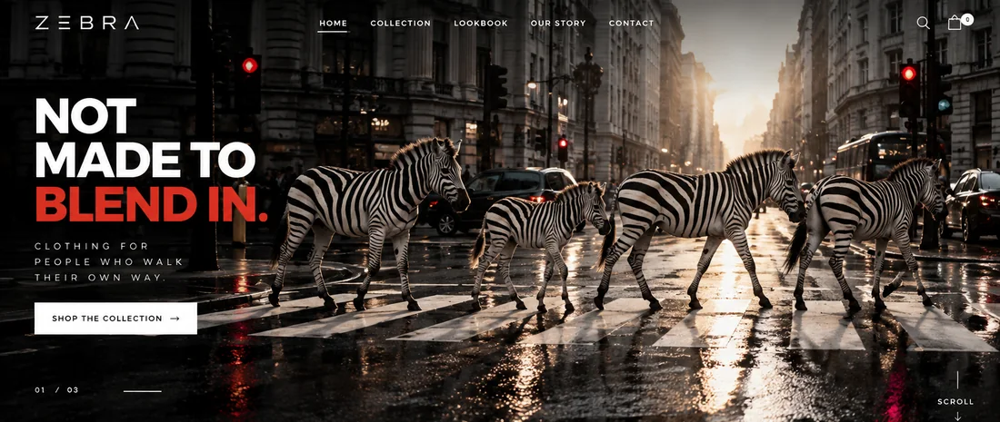

ZEBRA.
NOT MADE TO BLEND IN.

Behind the idea.
The concept starts with a striking visual collision: actual zebras walking across a city zebra crossing. That familiar urban pattern becomes the language of a fashion label. Its bold first impression carries into a usable storefront.
Designed with intent.
Instead of repeating stripes as decoration, the crossing itself becomes the campaign. Stark monochrome, flashes of red and street-fashion imagery position the collection with a recognizable point of view.
CROSSING.One everyday pattern.
A memorable identity.

From campaign
to commerce.
ZEBRA is more than a dramatic campaign visual. The concept connects its art direction to an interactive fashion storefront, where visitors can explore a collection and test a simulated shopping journey. This is a design exploration, not a live store.
Beyond the still.
The original interactive fashion demo can be opened and explored. Buying is simulated.
Some interactive features may work best when you open the standalone experience.
Not made
to blend in.
ZEBRA turns one recognizable everyday symbol into a confident visual identity and an interactive digital concept. The original artwork and live demo remain the centre of this story.